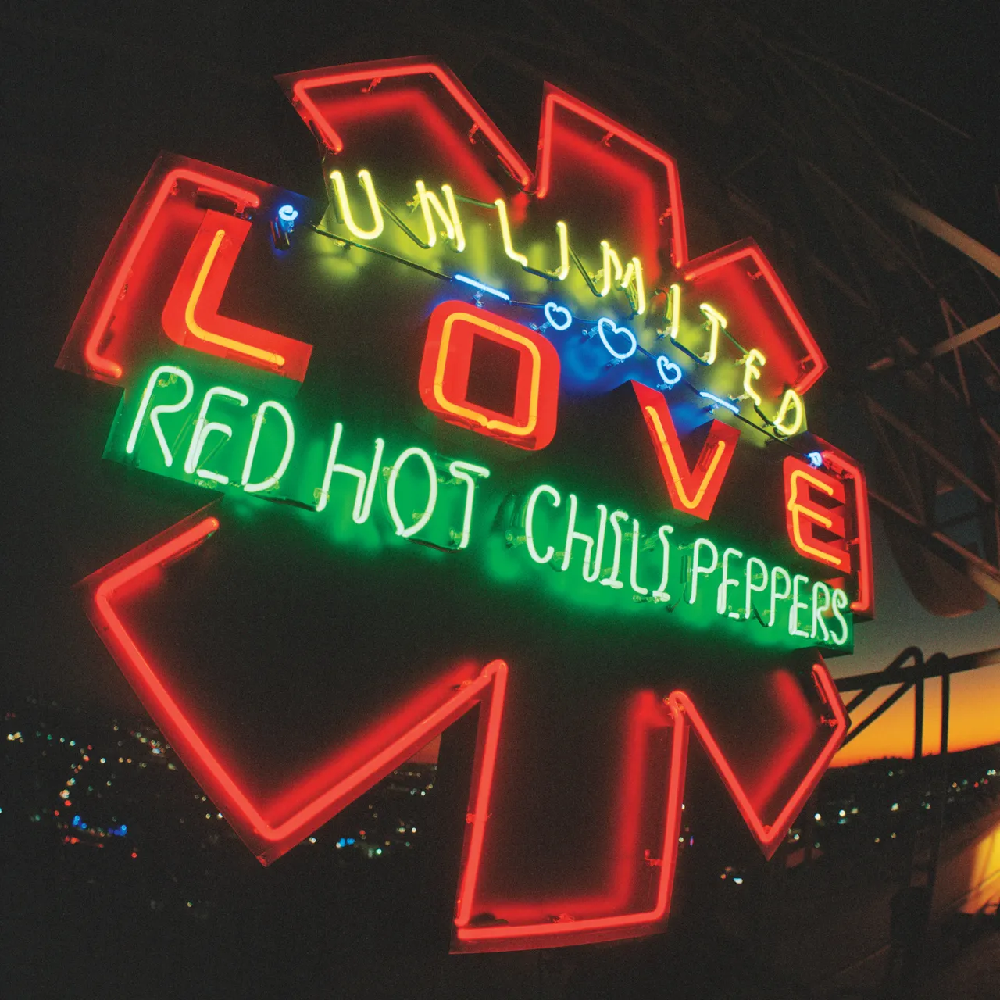
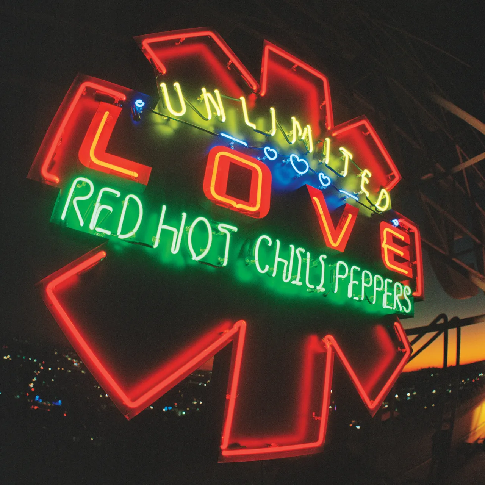

Red Hot Chili Peppers
— культовий рок-гурт із Лос-Анджелеса, який поєднує у своїй музиці елементи фанку, панку, альтернативного року та психоделії. Їхня творчість наповнена яскравою енергією, запальними гітарними рифами та текстами, сповненими емоцій і особистих історій. Одні з найзнаковіших альбомів гурту, Californication і By the Way, вивели їх на міжнародний рівень. Антоні Кідіс із його харизматичним вокалом та Флі з віртуозною грою на бас-гітарі залишаються символами гурту, додаючи їхній музиці унікальний, впізнаваний стиль.
 
